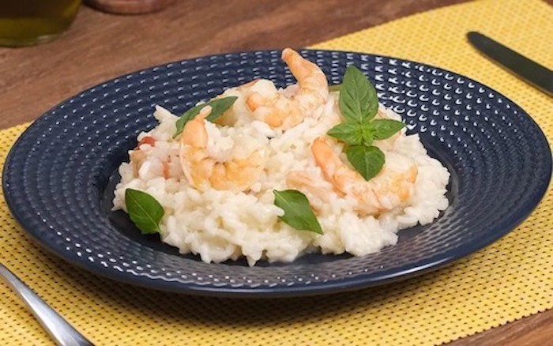

Shrimp Risotto

Risotto is a classic Italian recipe that can be made with arborio rice or leftover rice. Shrimp risotto is simple to prepare and requires just a few ingredients: vegetable broth, parmesan cheese, lemon and white wine.
The dish is a suggestion to make in special occasions. Check out how to make it!
Ingredients
- 300 grams of cleaned shrimps
- salt to taste
- Juice of half a lemon
- 1 clove of minced garlic
- 2 tablespoons of olive oil
- 1 drizzle of olive oil to cook the rice
- Half chopped onion
- 2 cups of arborio rice
- 200 milliliters of dry white wine
- 1 liter of boiling water
- 1 cube of vegetable broth
- 1 diced tomato
- Fresh basil to taste
- 1 tablespoon of butter
- 2 tablespoons grated parmesan cheese
Steps to make it happen
- Season the shrimp with salt to taste, juice of half a lemon and 1 clove of chopped garlic.
- In a pan, add 2 tablespoons of olive oil and the shrimp. Sauté and set aside.
- In the same pan, add 1 drizzle of olive oil and half a chopped onion. Sauté.
- Then add 2 cups of arborio rice and mix.
- Add 200 milliliters of dry white wine and mix again.
- In another pan, dissolve 1 vegetable stock cube in 1 liter of boiling water.
- Add the very hot vegetable broth, little by little and stirring constantly, to the pan with the arborio rice.
- Then, add the shrimp, 1 diced tomato and fresh basil to taste. Mix.
- Then add 1 tablespoon of cold butter, 2 tablespoons of grated Parmesan cheese and mix well.
- Serve immediately.
return to main page